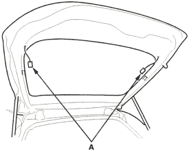
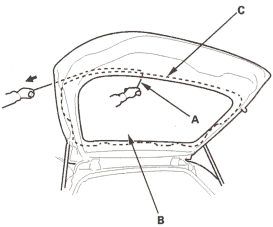
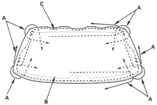

NOTE:
- Put on gloves to protect your hands.
- Wear eye protection when removing the glass with piano wire.
- Use seat covers to avoid damaging any surfaces.
- Do not damage the rear window defogger grid lines and terminals.
- Use glass adhesive set P/N. 08C73-X0230N.
- Remove these items:
- Remove these items, refer to the '01 Civic Shop Manual on this CD:
- Disconnect the rear window defogger connectors (A).

- If the old rear window is to be reinstalled, make alignment marks across the glass and body with a grease pencil.
- Apply protective tape along the inside and outside edges of the tailgate. Using an awl, make a hole through the adhesive from inside the vehicle at the corner portion of the rear window. Push the piano wire through the hole and wrap each end around a piece of wood.
- With a helper on the outside, pull the piano wire (A) back and forth in a sawing motion. Hold the piano wire as close to the rear window (B) as possible to prevent damage to the tailgate and carefully cut through the adhesive (C) around the entire rear window.

Cutting positions:

- Carefully remove the rear window.